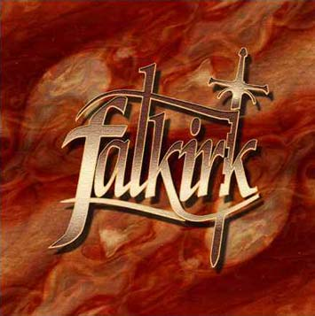

- 1st FALKIRK DEMO -
1999

- line-up -
Arnaud Bodin - guitar
Alexandre Bonvalot - guitar
Stéphane Fradet - vocals
Pascal Gilleront - bass
Laurent Robalo - drums
sold out / épuisée
Recorded and mixed by armando Ferreira & Philippe at R2S, Corbeil-Essonnes, FRANCE in March the 6th & 7th 1999.